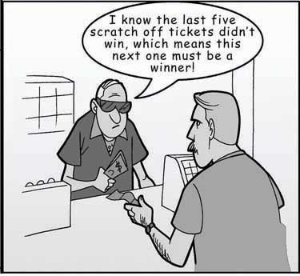
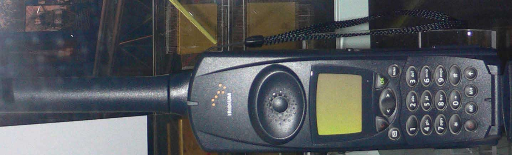

No matter which model you use, you need to know and avoid the decision-making traps that exist. Daniel Kahnemann (another Nobel prize winner) and Amos Tversky spent decades studying how people make decisions. They found that individuals are influenced by overconfidence bias, hindsight bias, anchoring bias, framing bias, and escalation of commitment.
Overconfidence biasWhen individuals overestimate their ability to predict future events. occurs when individuals overestimate their ability to predict future events. Many people exhibit signs of overconfidence. For example, 82% of the drivers surveyed feel they are in the top 30% of safe drivers, 86% of students at the Harvard Business School say they are better looking than their peers, and doctors consistently overestimate their ability to detect problems.Tilson, W. (1999, September 20). The perils of investor overconfidence. Retrieved March 1, 2008, from http://www.fool.com/BoringPort/1999/BoringPort990920.htm. Much like a friend who is always 100% sure he can pick the winners of this week’s football games despite evidence to the contrary, these individuals are suffering from overconfidence bias. People who purchase lottery tickets as a way to make money are probably suffering from overconfidence bias. It is three times more likely for a person driving 10 miles to buy a lottery ticket to be killed in a car accident than to win the jackpot.Orkin, M. (1991). Can you win? The real odds for casino gambling, sports betting and lotteries. New York: W. H. Freeman. To avoid this bias, take the time to stop and ask yourself whether you are being realistic in your judgments.
Hindsight biasThe opposite of overconfidence bias as it occurs when a person, looking at the past, judges that a mistake that was made should have been recognized as a mistake at the time. is the opposite of overconfidence bias, as it occurs when looking backward in time where mistakes made seem obvious after they have already occurred. In other words, after a surprising event occurred, many individuals are likely to think that they already knew this was going to happen. This may be because they are selectively reconstructing the events. Hindsight bias becomes a problem especially when judging someone else’s decisions. For example, let’s say a company driver hears the engine making unusual sounds before starting her morning routine. Being familiar with this car in particular, the driver may conclude that the probability of a serious problem is small and continue to drive the car. During the day, the car malfunctions, stranding her away from the office. It would be easy to criticize her decision to continue to drive the car because, in hindsight, the noises heard in the morning would make us believe that she should have known something was wrong and she should have taken the car in for service. However, the driver may have heard similar sounds before with no consequences, so based on the information available to her at the time, she may have made a reasonable choice. Therefore, it is important for decision makers to remember this bias before passing judgments on other people’s actions.
AnchoringThe tendency for individuals to rely too heavily on a single piece of information. refers to the tendency for individuals to rely too heavily on a single piece of information. Job seekers often fall into this trap by focusing on a desired salary while ignoring other aspects of the job offer such as additional benefits, fit with the job, and working environment. Similarly, but more dramatically, lives were lost in the Great Bear Wilderness Disaster when the coroner declared all five passengers of a small plane dead within five minutes of arriving at the accident scene, which halted the search effort for potential survivors, when, in fact, the next day two survivors walked out of the forest. How could a mistake like this have been made? One theory is that decision biases played a large role in this serious error; anchoring on the fact that the plane had been consumed by flames led the coroner to call off the search for any possible survivors.Becker, W. S. (2007). Missed opportunities: The Great Bear Wilderness Disaster. Organizational Dynamics, 36, 363–376.
Framing biasThe tendency of decision makers to be influenced by the way that problems are framed. refers to the tendency of decision makers to be influenced by the way that a situation or problem is presented. For example, when making a purchase, customers find it easier to let go of a discount as opposed to accepting a surcharge, even though they both might cost the person the same amount of money. Similarly, customers tend to prefer a statement such as “85% lean beef” as opposed to “15% fat”!Li, S., Sun, Y., & Wang, Y. (2007). 50% off or buy one get one free? Frame preference as a function of consumable nature in dairy products. Journal of Social Psychology, 147, 413–421. It is important to be aware of this tendency because, depending on how a problem is presented to us, we might choose an alternative that is disadvantageous simply because of how it is framed.
Figure 11.12
Source: [citation redacted per publisher request]. Reprinted by permission.
Escalation of commitmentWhen individuals continue on a failing course of action after information reveals this may be a poor path to follow. occurs when individuals continue on a failing course of action after information reveals this may be a poor path to follow. It is sometimes called sunk costs fallacy because the continuation is often based on the idea that one has already invested in this course of action. For example, imagine a person purchases a used car that turns out to need another repair every few weeks. An effective way of dealing with this situation might be to sell the car without incurring further losses, donate the car, or drive it without repairing it until it falls apart. However, many people spend hours of their time and hundreds, even thousands of dollars repairing the car in the hopes that they will justify their initial investment in buying the car.
A classic example of escalation of commitment from the corporate world may be Motorola’s Iridium project. In 1980s, the phone coverage around the world was weak—it could take hours of dealing with a chain of telephone operators in several different countries to get a call through from, say, Cleveland to Calcutta. Thus, there was a real need within the business community to improve phone access around the world. Motorola envisioned solving this problem using 66 low-orbiting satellites, enabling users to place a direct call to any location around the world. At the time of idea development, the project was technologically advanced, sophisticated, and made financial sense. Motorola spun off Iridium as a separate company in 1991. It took researchers 15 years to develop the product from idea to market release. However, in the 1990s, the landscape for cell phone technology was dramatically different from the 1980s, and the widespread cell phone coverage around the world eliminated a large base of the projected customer base for Iridium. Had they been paying attention to these developments, the decision makers would probably have abandoned the project at some point in the early 1990s. Instead, they released the Iridium phone to the market in 1998. The phone cost $3,000 and it was literally the size of a brick. Moreover, it was not possible to use the phone in moving cars or inside buildings! Not surprisingly, the launch was a failure and Iridium filed for bankruptcy in 1999.Finkelstein, S., & Sanford, S. H. (2000, November). Learning from corporate mistakes: The rise and fall of Iridium. Organizational Dynamics, 29(2), 138–148. The company was ultimately purchased for $25 million by a group of investors (whereas it cost the company $5 billion to develop its product), scaled down its operations, and modified it for use by the Department of Defense to connect soldiers in remote areas not served by landlines or cell phones.
Why does escalation of commitment occur? There may be many reasons, but two are particularly important. First, decision makers may not want to admit that they were wrong. This may be because of personal pride or being afraid of the consequences of such an admission. Second, decision makers may incorrectly believe that spending more time and energy might somehow help them recover their losses. Effective decision makers avoid escalation of commitment by distinguishing between when persistence may actually pay off versus when persistence might mean escalation of commitment. To avoid escalation of commitment, you might consider having strict turning back points. For example, you might determine up front that you will not spend more than $500 trying to repair the car and will sell the car when you reach that point. You might also consider assigning separate decision makers for the initial buying and subsequent selling decisions. Periodical evaluations of an initially sound decision to see whether the decision still makes sense is also another way of preventing escalation of commitment. This becomes particularly important in projects such as the Iridium where the initial decision is not immediately implemented but instead needs to go through a lengthy development process. In such cases, it becomes important to assess the soundness of the initial decision periodically in the face of changing market conditions. Finally, creating an organizational climate where individuals do not fear admitting that their initial decision no longer makes economic sense would go a long way in preventing escalation of commitment, as it could lower the regret the decision maker may experience.Wong, K. F. E., & Kwong, J. Y. Y. (2007). The role of anticipated regret in escalation of commitment. Journal of Applied Psychology, 92, 545–554.
Figure 11.13
Motorola released the Iridium phone to the market in 1998. The phone cost $3,000 and was literally the size of a brick. This phone now resides at the Smithsonian Air and Space Museum in Dulles, Virginia.
So far we have focused on how individuals make decisions and how to avoid decision traps. Next we shift our focus to the group level. There are many similarities and many differences between individual and group decision making. There are many factors that influence group dynamics and also affect the group decision-making process. We will discuss some of them in the next section.
Understanding decision-making traps can help you avoid and manage them. Overconfidence bias can cause you to ignore obvious information. Hindsight bias can similarly cause a person to incorrectly believe in their ability to predict events. Anchoring and framing biases show the importance of the way problems or alternatives are presented in influencing one’s decision. Escalation of commitment demonstrates how individuals’ desire for consistency, or to avoid admitting a mistake, can cause them to continue to invest in a decision that is not prudent.


{kind=link}